Российский мультипликационный сериал, производившийся студией компьютерной анимации «Петербург» с 2003
по 2012 год. Создан в рамках культурно-образовательного проекта «Мир без насилия». Мультсериал положил
начало одноимённой анимационной франшизе, насчитывающей несколько мультсериалов и три полнометражных
мультфильма. Производство первой серии — «Скамейка», завершилось осенью 2003 года.
Персонажи
Нюша, забавная хрюшка.
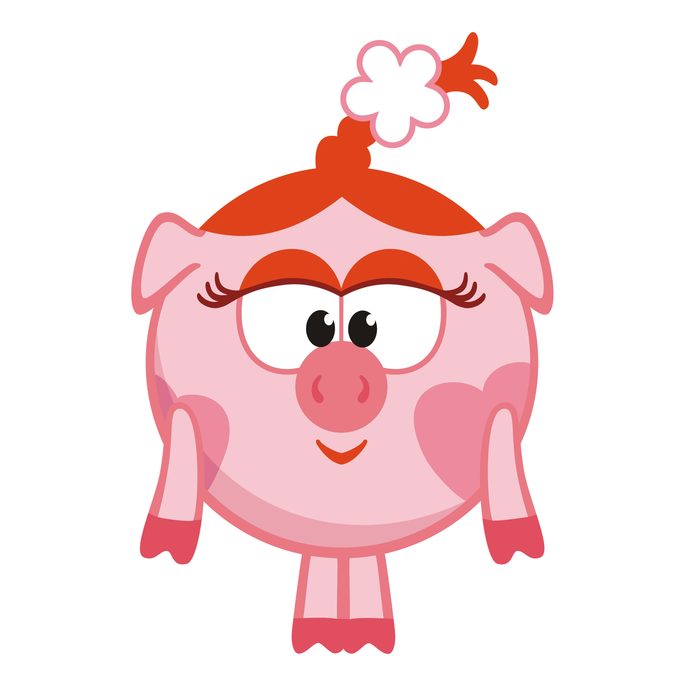
Барашик, великий поэт.
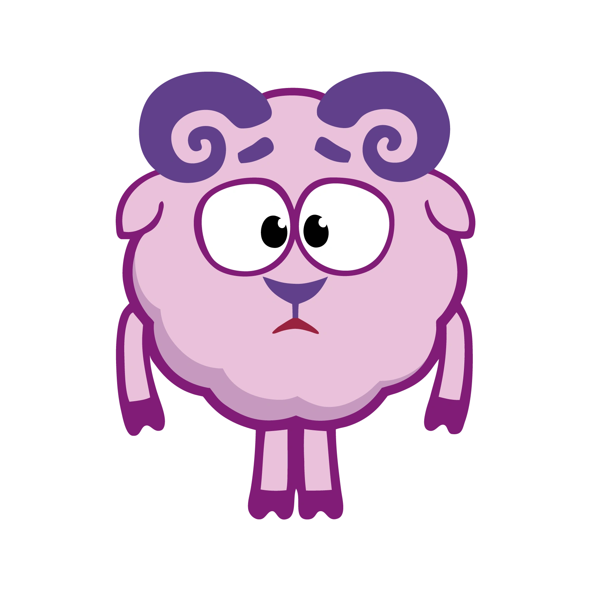
Ёжик, колючий дружок.
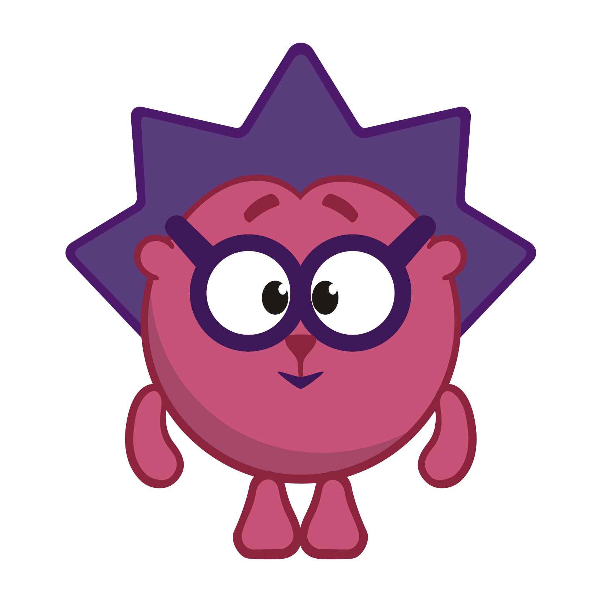
Карыч, мудрый ворон.
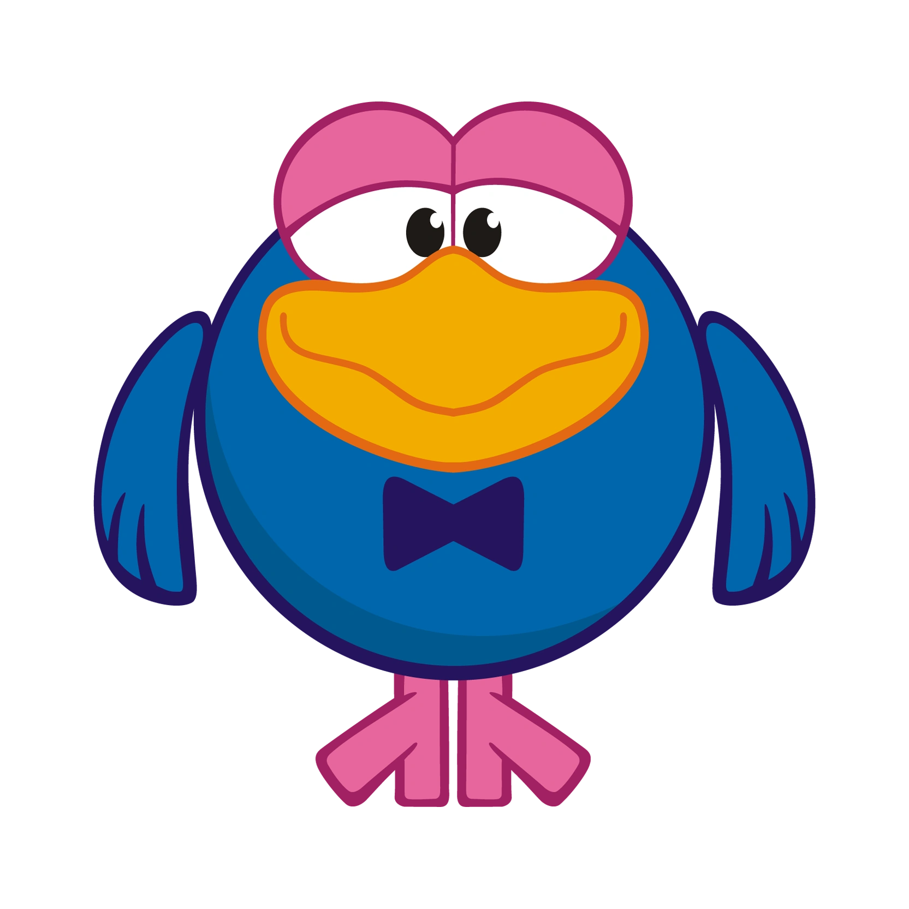
Копатыч, огородник со стажем.
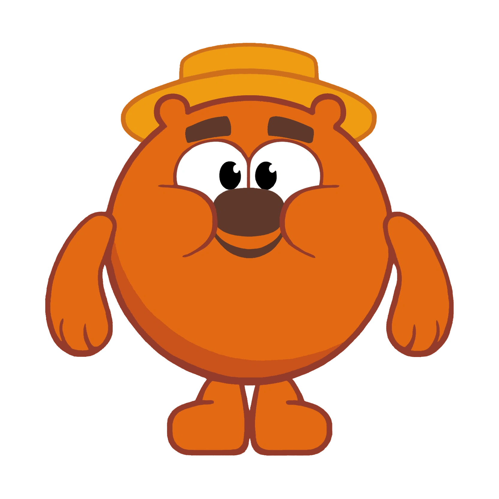
Лосяш, очень-очень умный лось.
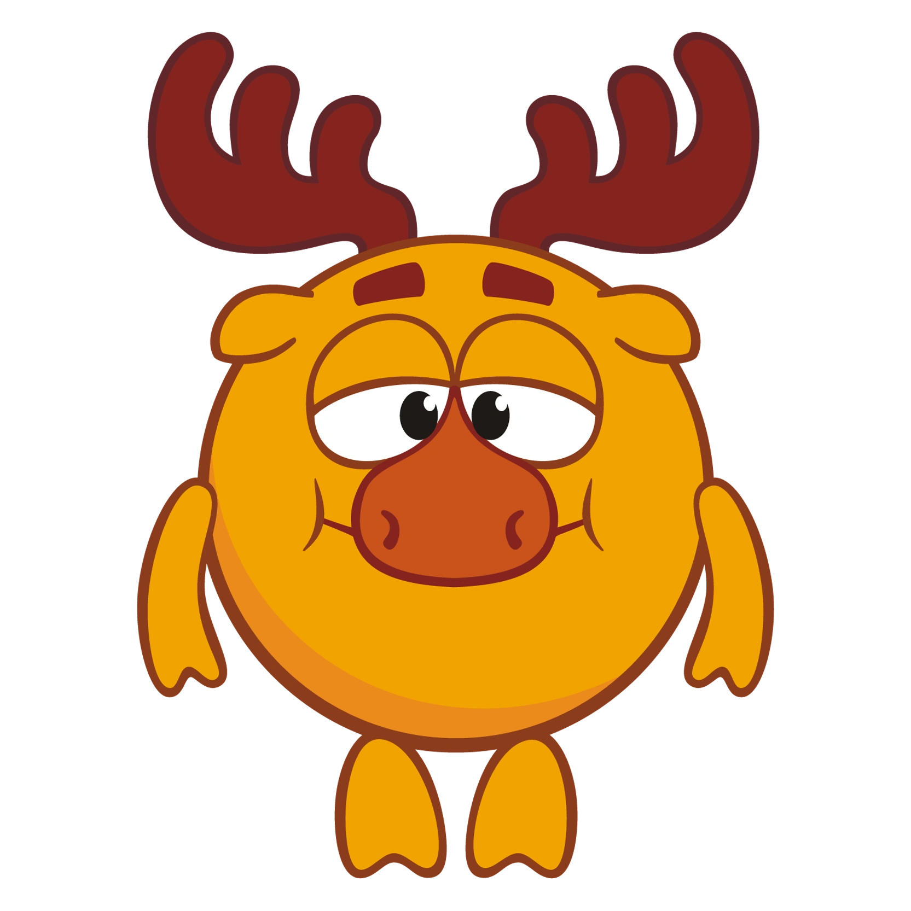
Пин, главный изобретатель.
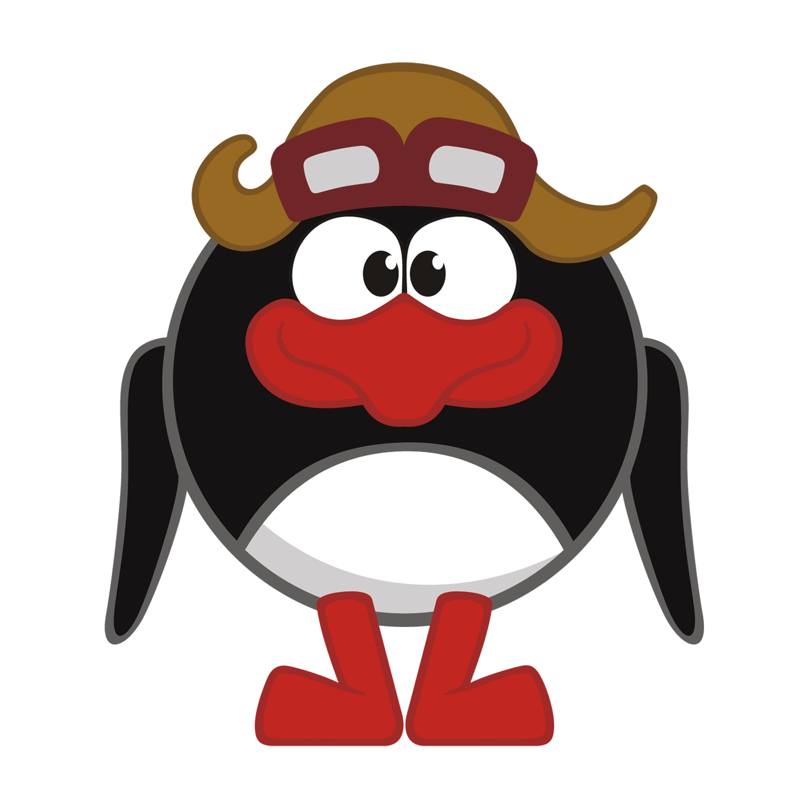
Совунья, мудрый лекарь.
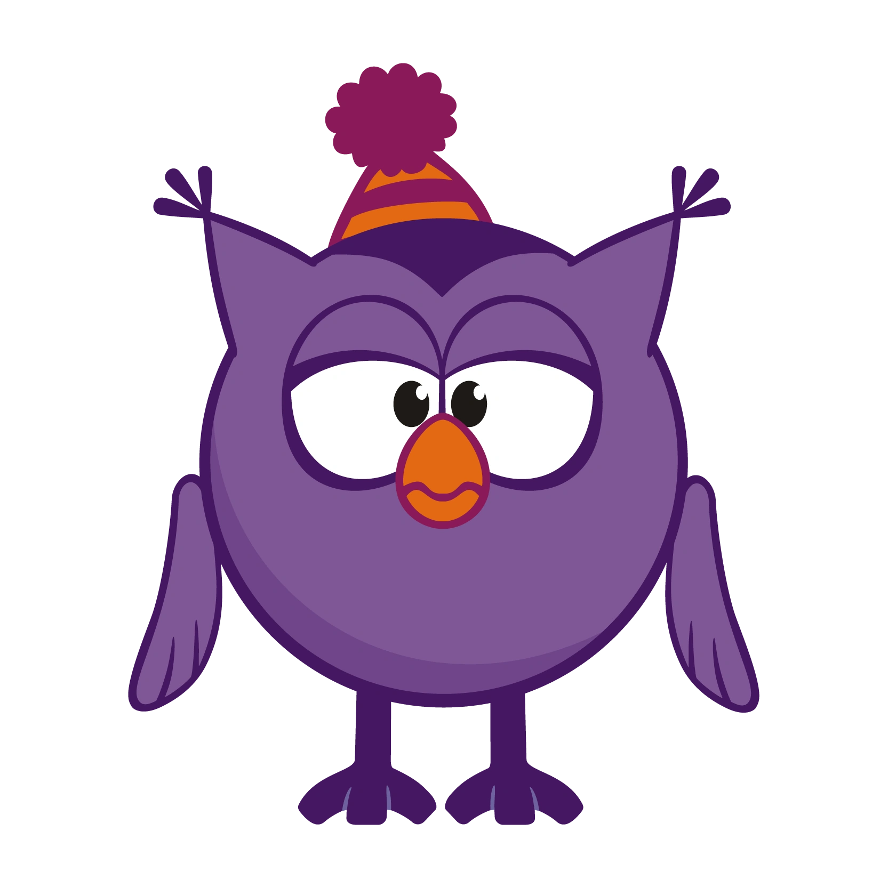
Крош, весёлый кролик.
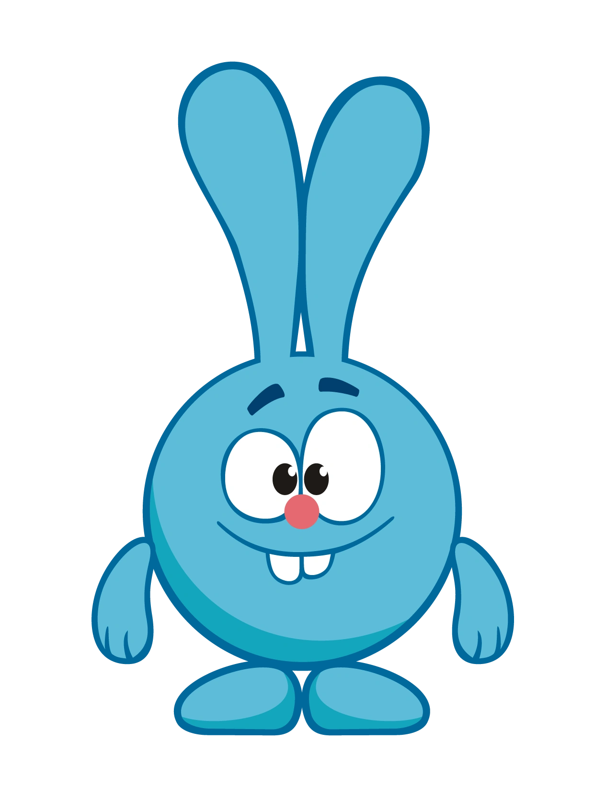
Лучшие эпизоды
"Новогодняя сказка"
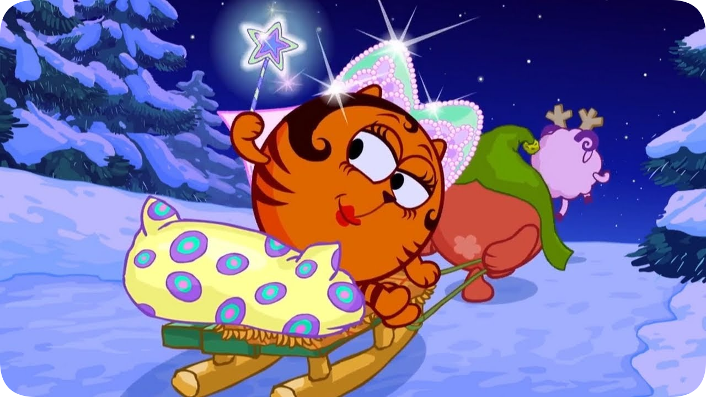
Сто пятьдесят пятая и сто пятьдесят шестая серии мультсериала «Смешарики», вышедшие 14 ноября 2009 года в составе сборника «Новогодняя сказка».
"Смысл жизни"
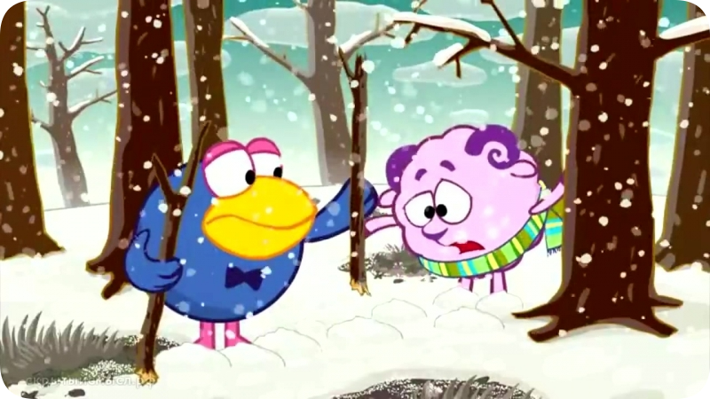
Сотая серия мультсериала «Смешарики», вышедшая 4 декабря 2007 года на сборнике «Новогодняя почта».
"Утерянные извинения"
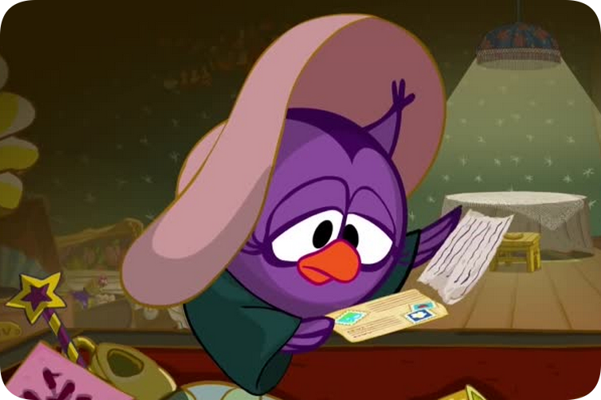
Сто девятая серия мультсериала «Смешарики», вышедшая 1 июня 2008 года на телеканале СТС во время празднования пятого Дня рождения Смешариков. Вошла в состав выпуска № 14 «Герой Плутона».